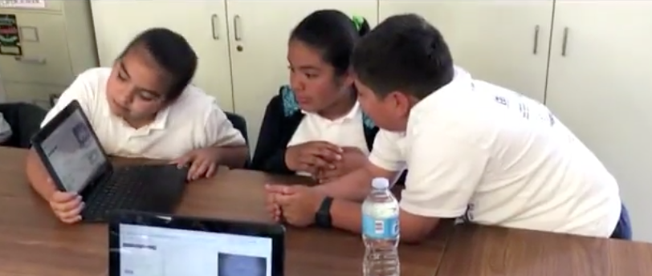
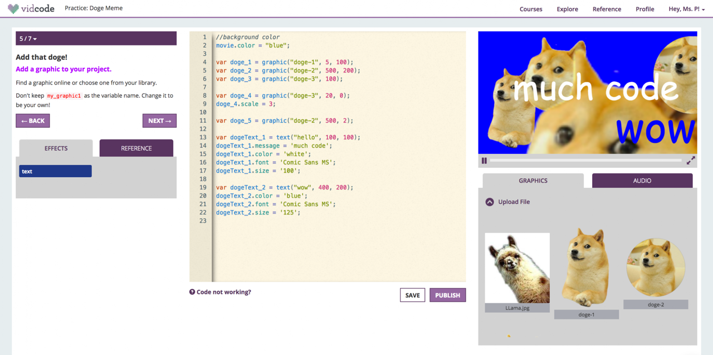
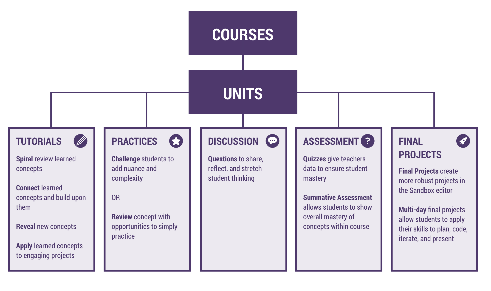
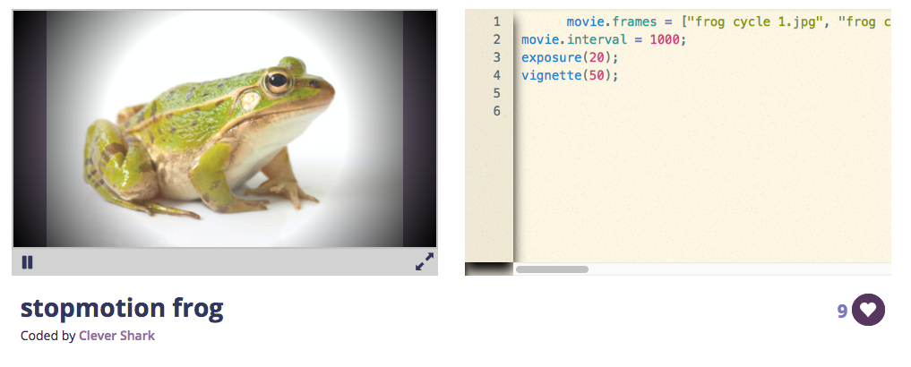
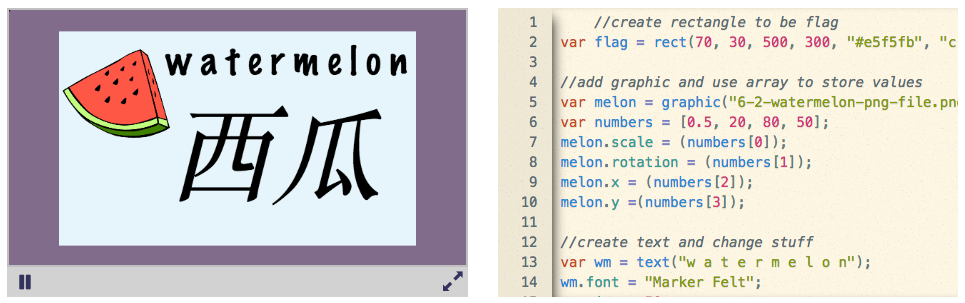

Case Study
CC1–CC3

The Creative Coding Series was Vidcode's core K–12 curriculum: three sequential courses teaching JavaScript through creative, project-based work. The courses were designed to be taught by educators with no programming background and to fit into any subject area: art, history, or science, or a dedicated computing elective. My contributions spanned tutorial writing, curriculum review, standards alignment, and the adaptation of course material for two external partners: Girl Scouts USA and BrainPOP.
Vidcode was built on a specific and considered belief: that creativity is not a distraction from learning to code, but the mechanism through which students actually learn. Every project in the series produced something students could show someone else: a video filter, an animation, a game, an interactive portrait. The output was always real, always shareable, and theirs.
This had direct implications for curriculum design. The choice of which code concept to introduce next was never purely a question of logical dependency (you need variables before loops). It was also a question of what that concept could do for a student expressively, right now. Arrays were introduced through the experience of building a list of things that mattered to the student. Randomness was introduced as a way to make things feel alive rather than mechanical. The technology and the creative act were kept in alignment throughout.
The other central design premise was teacher accessibility. A teacher who couldn't code needed to be able to run these lessons without becoming a liability in the room. This shaped everything from the platform's interface to the lesson plan format to the way hints were structured; the goal was always to keep the teacher in a facilitative role, not a technical one.
The three courses form a deliberate arc:
Creative Coding 1 introduces the foundational concepts of JavaScript programming (variables, functions, basic control flow) through short, approachable projects. Students produce their first lines of working code and build the confidence and vocabulary needed to go further.
Creative Coding 2 deepens and extends that foundation across four units, each organized around a thematic and technical focus: interactivity (event listeners, logical operators), procedural art (loops, functions), language and data (string manipulation, parameters), and creative culmination (combining control structures in open-ended projects). Each unit runs approximately ten hours of instruction.
Creative Coding 3 moves into more advanced territory: user interface design, algorithmic thinking, and data modeling. By this point students are building more complex, self-directed work and engaging with computer science concepts that connect directly to how software is built in the real world.

Each unit in the series followed a consistent internal structure that balanced guidance with creative freedom.
Tutorials introduced new concepts through guided projects. Steps were written in a conversational, direct voice aimed at the student, not at the teacher. Each instruction moved the project forward visibly, so students experienced continuous momentum rather than extended stretches of abstract instruction.
Practices reinforced concepts students had already encountered and asked them to make connections across what they'd learned. These were less tightly scaffolded than tutorials, requiring students to transfer skills rather than follow steps.
Creative Coding Challenges gave students open-ended prompts to build something new using the unit's concepts. There was no single correct output. The constraint was conceptual, not aesthetic.
Quizzes tested students' ability to read code and accurately describe what it does, which is a distinct and undervalued skill from writing code.
Units were also framed using a DO / KNOW / BELIEVE / WONDER structure that treated learning goals as more than skills acquisition. Do captured procedural competencies. Know captured conceptual understanding. Believe captured dispositions; the unit on interactivity, for instance, asked students to believe that giving and receiving feedback is a normal and valuable part of making things. Wonder articulated the questions the unit was designed to open up, not close down.
Each unit also identified common preconceptions to address directly; for example, the assumption that computers automatically respond to user input without any code to handle it, or that art and programming have nothing to do with each other.

Tutorial and lesson writing. I wrote and edited learner-facing tutorial content: the step-by-step instructions students worked through on the platform. This involved close attention to voice, pacing, and the sequencing of reveals: which detail to give now, which to defer, and how to frame a new concept so it connected to something the student already understood. Good tutorial writing for beginners is not the same as clear technical documentation; it has to carry emotional register as well as informational content.


Curriculum review. I conducted a detailed review of the Creative Coding 2 course, producing written notes on the conceptual arc across units, the consistency of the hint system, platform UX issues that affected the learning experience, asset choices, naming conventions in the codebase, and places where the curriculum's implicit assumptions about prior knowledge needed to be made explicit. This kind of close reading, looking at a curriculum both as a learner moving through it and as a designer assessing its internal logic, is a distinct form of design work.
Standards alignment. I worked on aligning course content to CSTA K–12 Computer Science Standards at Levels 1B and 2, as well as to the AP Computer Science Principles framework. This involved not just identifying which standards a given lesson touched, but ensuring that the coverage was substantive, meaning the standard was genuinely met by what students were asked to do, not merely referenced in the documentation.
Partner adaptations. Two versions of the curriculum required significant adaptation work.
For Girl Scouts USA, the adaptation needed to serve a different context: coding workshops that might run offline as well as online, with participants who weren't necessarily enrolled in a class. I contributed tutorial content for a JavaScript self-portrait project using the webcam, video filters, and graphical overlays, designed to give participants a complete, meaningful experience in a short session. I also worked on a World Leaders tutorial that used JavaScript objects to store and display data about notable women in computing and GSUSA history, introducing object syntax through figures students in that context were likely to find relevant: Ada Lovelace, Grace Hopper, Juliette Gordon Low.
For BrainPOP, the task was adapting Vidcode's thematically agnostic coding projects into a BrainPOP-branded format, connecting coding activities to BrainPOP's existing topic library (science, history, social studies) so that the coding work extended rather than replaced BrainPOP's core content. This required understanding what BrainPOP's learners expected from the platform and where a coding project could add genuine value rather than just novelty.
The most interesting design problem in this work was the tension between scaffolding and open-endedness. A well-scaffolded tutorial removes obstacles and keeps students moving, but it can also remove the productive struggle that makes learning stick. The Creative Coding Challenges at the end of each unit were one answer to this: they deliberately loosened the structure to give students room to make something genuinely their own. But the transition from "follow these steps" to "make something with what you've learned" is not automatic, and it was a recurring design question how to support that transition without closing it down again.
The hint system was a related challenge. A hint that simply reveals the answer trades short-term frustration relief for long-term understanding. I spent time developing a taxonomy of hint types, ranging from pertinent questions that redirected the student's attention, to partial solutions, to analogies drawn from the student's own earlier code, that tried to preserve as much of the learning value as possible while still providing real support. Whether the platform's implementation of that taxonomy was fully realized is a different question, but the underlying design thinking was sound.